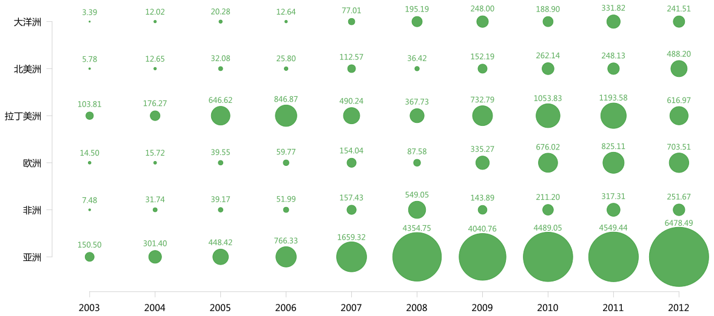

可视化：中国在各洲 OFDI 变化
自从 Hans Roslling 在 TED 做了演讲之后，泡泡图（bubble plot）就变得流行起来。下面这张图是我用泡泡图制作的中国在各洲的各年投资量。

从该图可以看出，2000 年到 2006 年，拉美和亚洲是中国企业在年左右投资的首选。2007 年“十一五规划”和 QDII 制度推动对外投资猛增后，中国企业对亚洲的投资量开始独大，尤其是到 2012 年，对拉美的投资量已和除亚洲外的其他几洲相差无几。虽然中国企业在其他几洲的投资量也有所增加，但与对亚洲的投资量比起来就有些小巫见大巫了。澳洲投资因为力拓事件而声名颇大，但实际投资比重一直很有限。这与澳洲投资局限于资源性投资有关。
我的泡泡图与 Roslling 的泡泡图的区别是，这是张静态图，只能呈现三个维度。三个维度也是二维平面图能呈现的极限，再想增加维度只能通过图像组合的方式实现。图像是用R制作。